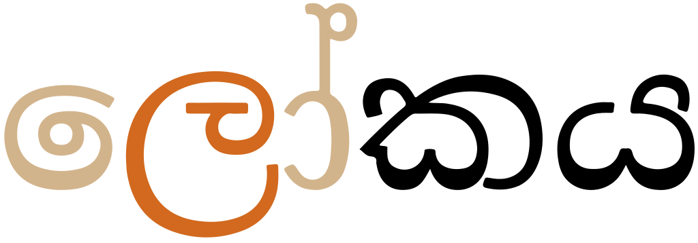

This page brings together basic information about the Sinhala script and its use for the Sinhalese language. It aims to provide a brief, descriptive summary of the modern, printed orthography and typographic features, and to advise how to write Sinhalese using Unicode.
The Sinhala script is an abugida, ie. consonants carry an inherent vowel sound that is overridden using vowel signs. See the table to the right for a brief overview of features for the modern Sinhala orthography.
Sinhala is a diglossic language, that is, the spoken and written forms of the language show considerable variation.
Words are separated by spaces, and text runs horizontally, from left to right.
The eḷu hōḍiya system contains 20 consonant and 20 vowel letters and can be used to represent the sounds of the spoken language almost perfectly. The miśra hōḍiya set contains an additional eighteen consonant letters, many of which are aspirated equivalents of existing letters (but which are pronounced in the same way as the unaspirated ones). ❯ consonants
Unusually for indic scripts, there is a set of prenasalised consonants, and there is also an æ vowel. ❯ prenasalised
The virama is usually displayed in consonant clusters, without the use of conjunct forms. However, it is also possible to render clusters using conjunct forms (ligatures or reduced glyphs). A zero width joiner is used after the virama to signal the intention for that. Putting the ZWJ before the virama produces another form of conjunct, where adjacent consonants touch each other, but this is not used for modern Sinhalese. ❯ clusters
One particular affix, යිyi, is pronounced j and treated as a final consonant.
Onset consonant clusters are limited in number. Syllable-final consonants can be written using one of 2 combining marks. ❯ finals
This orthography is an abugida with one inherent vowela. Other post-consonant vowels and 2 diphthongs are written using 13 vowel signs, all combining marks. ❯ vowels
The inherent vowel is typically transcribed as a, and pronounced a in stressed syllables, and otherwise ə.wl,#Phonology So ka is written by simply using the consonant letter.
The vowel letters of Sinhala are divided into a core set and an extended set. The core ( ʃudd ʰa) alphabet covers the sounds of modern spoken Sinhala. The extended (mi ʃra) letters and vocalics are used for writing Sanskrit, Pali, and Tamil words. These are the 2 right-hand vowel signs (diphthongs) in the list above.
Nine vowel signs are spacing marks, meaning that they consume horizontal space when added to a base consonant.
An orthography that uses vowel signs is different from one that uses simple diacritics or letters for vowels, in that the vowel signs are generally attached to a whole orthographic syllable, rather than just applied to the letter of the immediately preceding consonant. This means that pre-base vowel signs and the left glyph of circumgraphs appears before a whole consonant cluster if it is rendered as a conjunct (see prebase).
Standalone vowels
Sinhala represents standalone vowels using a set of independent vowel letters. The set includes a character to represent the inherent vowel sound.
The core ( ʃudd ʰa) alphabet includes the following.
The extended (mi ʃra) letters are as follows, but see also vocalics:
ඓ␣ඖ
The pronunciations of අ [U+0D85 SINHALA LETTER AYANNA] and ආ [U+0D86 SINHALA LETTER AAYANNA] vary, but in a fairly predictable way. The former is a in the first syllable, except for a few words, and before double consonants or clusters, and ə word finally and before single consonants. The latter represents aː everywhere except word-finally, where it may be a, depending on the word structure. Similar length rules apply to e and o in final position.
Multipart vowels
Multipart vowels only occur in Sinhalese decomposed text. Usually there are no multipart vowels.
The following are the vowel signs that decompose in NFD and recompose under NFC.
ේ␣ො␣ෝ␣ෞ
Pre-base vowel signs
ෙ␣ ␣ෛ
Two vowel signs appear to the left of the base consonant letter or cluster, eg. කෙ. The first of these is a core letter, the second an extended letter.
These are combining marks that are always stored after the base consonant. The rendering process places the glyph before the base consonant.
In fact, these vowel signs appear before the start of the orthographic syllable. When a syllable onset is a consonant cluster, the vowel sign appears to the left of the initial character in the consonant stack.
A prebase vowel, rendered to the left of the consonant after which it is pronounced.show composition
පළවෙනි
Circumgraphs
ේ␣ො␣ෝ␣ ␣ෞ
Four vowels are produced by a single combining character with visually separate parts that appear on different (mostly opposite) sides of the consonant onset.
These are all core letters, except for the last.

A circumgraph vowel: a single code point with glyphs on both sides of the consonant after which it is pronounced.show composition
ලෝකය
All of these circumgraphs can be written as a single code points, or as multiple code points. See encoding.
Vowel length
tbd
Nasalisation
tbd
Vowel sign placement
The following list shows where vowel signs are positioned around a base consonant to produce vowels, and how many instances of that pattern there are.
2 pre-base, eg. කෙke
3 post-base, eg. කැkæ
2 superscript, eg. කිki
2 subscript, eg. කුku
3 pre+post-base, eg. කොko
1 pre+superscript, eg. කේkē
Tones
Sinhala is not a tonal language.
Vocalics
These are all classed as extended (mi ʃra) letters. Most are no longer in contemporary use.
Note that the aspirated mi ʃra consonants are mapped to the same sounds as the unaspirated ʃudd ʰa ones, and the retroflex ṇ and ḷ are each pronounced without retroflexion.
The prenasalised shapes are formed from a combination of the shapes of the participating characters.
There is one additional, archaic letter.
ඦ
Vowel absence
්
් [U+0DCA SINHALA SIGN AL-LAKUNA] is attached to a consonant to indicate that the inherent vowel is not pronounced. It has 2 different shapes, depending on which base consonant it is attached to.
The two different shapes of AL-LAKUNA. Combined with shuddhak on the left, and mishrak on the right.
Consonants without a following vowel typically occur at the end of a word, or as part of a consonant cluster or geminate (see clusters), eg.
අලුත්
ඇතැම්
කන්ද
Onset consonants
Clusters of consonant letters at the beginning of an orthographic syllable occur in Sinhala, and they are handled as described in the section clusters.
Final consonants
Two combining characters are used to represent syllable-final consonant sounds.
Either of these 'semi-consonants' must be used after a vowel or after a consonant+vowel (including the inherent vowel), and must be the last combining character in the syllable.
Consonant clusters
Consonant cluster handling is a little unusual in Sinhala, compared to other indic scripts.
There are 3 ways of managing consonant clusters. Modern Sinhala uses only the first two alternatives.
Conjunct forms : Use a reduced or ligated form, especially for r or y. Since the approach changes the shape of the constituent components, the cluster is referred to as a conjunct.
Touching consonants : Make the consonants touch (not used in modern Sinhala).
The virama indicates that a consonant has no vowel (see novowel). The shape of the virama can take two forms, depending on the base character it is appended to: with k you get ක්; with kh you get ඛ්, eg.
ලක්ෂය
අම්මා
If a pre-base vowel sign is added after the last consonant in a cluster, it will appear immediately to the left of that consonant, rather than before the first consonant in the cluster, eg. see how the vowel in fig_kko cuts between the two consonants in the cluster.
The pre-base part of the vowel (highighted) appears immediately before the consonant after which it is pronounced, rather than at the beginning of the consonant cluster.
This approach is principally used when combining r or y with another consonant (both before and after, in the case of r), and produces a reduced or ligated form.
Common conjuncts in Sinhala.
There are also forms using both, eg. ක්‍ය්‍රkyraKyraකාර්‍ය්‍යාලයkār͓₊y͓₊yāly (kār͓₊y͓₊yālaya)the office
Although the use of the conjunct with r is required in normal Sinhalese text, it is possible to not use it: both of the following are valid ways to write karma.sකර්මkr͓mකර්‍මkr͓₊m
Wikipedia lists several more conjuncts, some of which are reproduced below. The availability of these conjuncts is font dependent, eg. ඳ්‍වⁿd͓₊v doesn't ligate using the default font of this page, but may with another.
The third approach is used in ancient scriptures but is not used in modern Sinhala.ws It hides the virama and moves the consonants alongside each other, so that they are touching, eg. මම becomes ම‍්මmm
The single code point per vowel sign is the form preferred by the Sinhala encoding standards and the form in common use for Sinhala. The parts are separated, however, in Unicode when normalised using Normalisation Form D (NFD). If Normalisation Form C (NFC) is applied, they recompose.
Whichever approach is used, the vowel signs must be typed and stored after the consonant characters they surround. In the case of decomposed vowel signs, the order is also important and must be as shown above.
Numbers, dates, currency, etc.
Sinhala uses european digits.
There is, however, a set of native digits, that were used into the 20th century, but mostly associated with horoscopes. The shapes of some of these are identical to characters used for other purposes.
There is also another, older set that were used in an archaic number system, called Sinhala Illakkam, prior to 1815. These are all in the Sinhala Archaic Numbers block.
This section brings together information about the following topics:
writing styles;
cursive text;
context-based shaping;
context-based positioning;
baselines, line height, etc.;
font styles;
case & other character transforms.
Sinhala text is not cursive (ie. joined up like Arabic), however there is a significant amount of interaction between glyphs, and some joining, around consonant clusters.
The orthography has no case distinction, and no special transforms are needed to convert between characters.
Context-based shaping & positioning
Contextual shaping
Similarly to the Tamil script, the u and ū vowels assume various different shapes and connection points, depending on what consonant they follow.
(-a)
-u
-ū
k
ක
කු
කූ
p
ප
පු
පූ
r
ර
රු
රූ
ḷ
ළ
ළු
ළූ
Shape variants for the u and ū vowel signs.
Other idiosyncratic combinations are also possible, such as the rendering of ræ.
රra
රැræ
රෑrǣ
Shape variants for the æ and ǣ vowel signs.
Combining characters may need to be adapted to fit the consonants they are attached to.
ක් ඛ් පි රි ඬි
Two different versions of hal kirīma (left); differently shaped i in pi, ri and ⁿɖi (right).
As described above, consonant clusters may cause conjuncts to form, as a way of indicating that there are no intervening vowels. Conjunct ligations are generally expected for r and y, and other conjuncts depend on font availability. Generally, a conjunct is formed by reducing the non-final consonant shapes.
ක්‍වක්ව
Conjoined kv (left), and kv with hal kirīma (left).
Context-based positioning
Vowel signs may appear above, below, to the right, to the left, or on both sides of the base consonant.
ක කි කු කැ කෙ කො
Position of vowel signs for the sequence ka ki ku kæ ke ko.
Vowels signs are positioned around an orthographic syllable, rather than around a specific consonant. So a part of a vowel sign that appears to the left of its base will appear to the left of a conjunct.
ක්‍වො
In the syllable kvo the vowel sign appears on either side of the conjunct, not the letter v.
When a u vowel (or the long vowel) appears below a conjunct, it is placed below the final consonant, eg. ක්‍යුk͓₊yu
This section is still undergoing research and development.
Grapheme clusters can be used much of the time to segment Sinhala words, because the virama is displayed without causing a conjunct. However, there are conjuncts in Sinhala, and these should not be split apart by edit operations that visually change the text (such as letter-spacing, first-letter highlighting, and in-word line breaking). For those operations one needs to segment the text using orthographic syllables, which string grapheme clusters together with ්<ZWJ> [U+0DCA SINHALA SIGN AL-LAKUNA​ + U+200D ZERO WIDTH JOINER],
where the al-lakuna has an Indic Syllabic Category of Virama.
The fact that modern Sinhala only combines grapheme clusters if a virama is accompanied by a ZWJ makes it much easier to manage situations where the virama should be displayed and end a typographic unit, and situations where it should become invisible and form a conjunct.
Grapheme clusters
Base Combining_mark*
Combining marks may include zero or more of the following types of character.
Any of the above may occur after a consonant base. Independent vowel bases usually only have final consonant marks. There is usually only one vowel sign per base consonant, but there can be 2 in decomposed text.
A virama only occurs alone after a consonant base and indicates a syllable coda or a vowelless consonant in a cluster. Because a virama used alone is a visible vowel-killer and doesn't create conjuncts, it can be treated as just another combining mark and segmentation can break after it.
The following examples show a variety of grapheme clusters:
Click on the text version of these words to see more detail about the composition.
අදිනවා
පුංචි
අලුත්
කන්ද
Larger typographic units
(Consonant Al_lakuna ZWJ)* Grapheme_cluster
Editorial operations that change the visual appearance of the text, such as letter-spacing, first-letter highlighting, in-word line-breaking, and justification, should never split conjunct forms apart. For this reason, an alternative way of segmenting graphemes is needed. This may not apply, however, for some other operations such as cursor movement or backwards delete.
Where conjuncts appear, a typographic unit contains multiple grapheme clusters. The non-final grapheme clusters all end with the sequence්+ZWJ [U+0DCA SINHALA SIGN AL-LAKUNA + U+200D ZERO WIDTH JOINER], and the final grapheme cluster begins with a consonant.
The following are examples.
Click on the text version of these words to see more detail about the composition.
ඉංග්‍රීසි
චර්‍මය
Pre-modern orthographies may bring consonants in a cluster closer together, rather than creating a conjunct (see touchingconsonants). In this case, the trigger is a ZWJ followed by a virama.
Complicating factors
It can be difficult to know how to type a word that you see on a non-digital platform. For example, There are several words in Wiktionary that are rendered with a visible al-lakuna but that have both the al-lakuna and ZWJ in the underlying code. The latter is invisible, so cannot be detected from looking at the word on paper, and fonts don't produce a conjunct form, but the way the word is typed will affect the behaviour in the digital world by producing different segmentation, as shown just below, where the top spelling has the ZWJ and the bottom doesn't.
Click on the text version of these words to see more detail about the composition.
කුරුල්‍ලා
කුරුල්ලා
The differenece between just al-lakuna and al-lakuna with ZWJ can also affect vowel sign positioning. For the purposes of illustration, see fig_kro, where the word on the left is written with ZWJ to produce a conjunct, whereas on the right there is no conjunct. Otherwise the characters are the same. Observe the placement of the pre-base vowel. In the syllable kro on the left, the vowel sign surrounds the whole conjunct. In the middle we drop the ZWJ to give -k.ro, and now the pre-base glyph precedes the RA. The same should happen if the code points indicate a conjunct but the font doesn't have the necessary glyphs.
Placement of pre-base vowel glyphs.
Browser behaviour
Test in your browser.Left to right, the following words contain 2 conjunct sequences with virama+ZWJ, one that displays as a conjunct, another that doesn't, and two sequences with virama but no ZWJ. First, the text is displayed in a contenteditable paragraph, then in a textarea. Results are reported for Gecko (Firefox), Blink (Chrome), and WebKit (Safari) on a Mac.
Cursor movement.Move the cursor through the text.
Gecko steps through the whole text using grapheme clusters. The cursor visually stops in the middle of the virama+ZWJ sequences. Blink steps through the virama+ZWJ sequences using grapheme clusters, however the cursor appears to skip to the end of the whole sequence and you have to hit the cursor key again (with no apparent movement) to actually clear it. Blink treats the sequences with just a virama as a single unit. WebKit skips all sequences with a virama (whether or not there is a ZWJ) as a single unit.
Selection.Place the cursor next to a character and hold down shift while pressing an arrow key.
The behaviour is the same as for cursor movement. This has the effect of sometimes appearing to highlight backwards in Blink.
Deletion. Forward deletion works in the same way as cursor movement. The backspace key deletes code point by code point, except that WebKit deletes both the virama and the ZWJ at the same time.
Line-break.See this test. The CSS sets the value of the line-break property to anywhere. Change the size of the box to slowly move the line break point.
Gecko wraps at grapheme cluster boundaries except that it wraps a sequence with virama+ZWJ as a single unit. Blink and WebKit wrap everything at grapheme cluster boundaries, which has the effect of breaking a conjunct in half at the end of a line.
The punctuation character ෴ [U+0DF4 SINHALA PUNCTUATION KUNDDALIYA] once functioned to indicate the end of a paragraph, but is not used for modern Sinhala content.
Bracketed text
(␣)
Sinhala commonly uses ASCII parentheses to insert parenthetical information into text.
Sinhala texts use quotation marks around quotations. Of course, due to keyboard design, quotations may also be surrounded by ASCII double and single quote marks.
Single quotation marks are used for quotations within quotations.
Emphasis
tbd
Abbreviation, ellipsis & repetition
tbd
Inline notes & annotations
tbd
Other punctuation
tbd
Other inline text decoration
tbd
Line & paragraph layout
Line breaking & hyphenation
Sinhala is normally wrapped where spaces mark word boundaries.
Line-edge rules
As in almost all writing systems, certain punctuation characters should not appear at the end or the start of a line. The Unicode line-break properties help applications decide whether a character should appear at the start or end of a line.
The following list gives examples of typical behaviours for characters used in modern Sinhala. Context may affect the behaviour of some of these and other characters.
Click on the Sinhala characters to show what they are.
“ ‘ ( should not be the last character on a line
” ’ ) ? ! % should not begin a new line
Text alignment & justification
tbd
Text spacing
tbd
This section looks at ways in which spacing is applied between characters over and above that which is introduced during justification.
Baselines, line height, etc.
Sinhala uses the so-called 'alphabetic' baseline, which is the same as for Latin and many other scripts.
Diacritics appear above and below Sinhala letters, and consonant clusters are stacked. However, these remain reasonably close to the letters, and in fact, tall letters may be reshaped to avoid large extensions.
To give an approximate idea, fig_baselines compares Latin and Sinhala glyphs from Noto fonts. The basic height of Sinhala letters is typically around (just marginally higher than) the Latin x-height, however combining marks reach a little beyond the Latin ascenders, creating a need for slightly larger line spacing.
Font metrics for Latin text compared with Sinhala glyphs in the Noto Serif Thai (top) and Noto Sans Thai (bottom) fonts.
fig_baselines_other shows similar comparisons for the Iskoola Pota and Sinhala MN fonts.
Latin font metrics compared with Sinhala glyphs in the Iskoola Pota (top) and Sinhala MN (bottom) fonts.
Counters, lists, etc.
tbd
Styling initials
tbd
Page & book layout
This section is for any features that are specific to Sinhala and that relate to the following topics:
general page layout & progression;
grids & tables;
notes, footnotes, etc;
forms & user interaction;
page numbering, running headers, etc.
Input
The Sinhala keyboards has deadkeys which change the assignments of keys around them when pressed. For example, pressing the key for e will change several keys to letters that start with the same symbol.
Sinhala keyboard in default state.Sinhala keyboard after the key for e is pressed.
Effectively, you type characters or parts of multipart characters in visual order, and the system then has to rearrange things to produce the expected codepoint order.